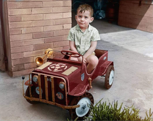
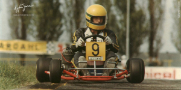
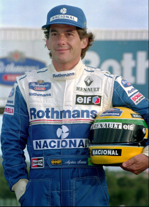

Infância e Juventude
Primeiros Anos
Filho do empresário Milton Guirado Theodoro da Silva e de Neyde Joanna Senna da Silva, Ayrton Senna nasceu em 21 de março de 1960, na Maternidade de São Paulo, no bairro de Cerqueira César, São Paulo. A mãe de Senna era neta de imigrantes italianos e o seu pai era filho de uma espanhola (de Tíjola, em Almeria) com um paulista. Morou no Jardim São Paulo dos quatro aos doze anos, mudando-se posteriormente para o Tremembé. Desde novo ele se interessava por automóveis.
Foi incentivado pelo pai, um entusiasta das competições automobilísticas, que montou o primeiro kart de Senna quando este tinha quatro anos, e que tinha um motor de máquina de cortar grama. Aos nove anos, já conduzia jipes pelas estradas dentro das propriedades rurais de Milton. Na televisão, gostava de assistir o anime Speed Racer, sobre um piloto de corridas.

Início no Kart
Começou a competir oficialmente nas provas de kart aos treze anos. A sua primeira vitória oficial aconteceu na primeira prova oficial no kart de que participou, em julho de 1973. Tal fato teve lugar no Kartódromo de Interlagos, que hoje leva seu nome. Em 1977 ganhou o seu primeiro "Campeonato Sul-Americano de Kart", repetindo o feito em 1980. Foi campeão brasileiro de kart em 1978, 1979 e 1980. Foi campeão paulista em duas ocasiões, em 1974 (na categoria júnior) e 1976. Foi duas vezes vice-campeão mundial de kart, em 1979 - empatou com o campeão nos pontos, mas perdeu no desempate - e 1980.
A conquista do seu primeiro título de campeão brasileiro de kart ocorreu em 16 de julho de 1978 no Kartódromo de Tarumã, em Viamão, na Grande Porto Alegre. Ayrton, com 18 anos na época, competiu pela equipe "Sulam" e venceu todas as provas, derrotando assim o seu maior rival Walter Travaglini. A competição teve mais de 150 pilotos inscritos e contou com cinco categorias diferentes. Ayrton competiu na categoria de "100 cc" em três baterias, todas realizadas no domingo em um total de 21 voltas. Ainda em 1978, Ayrton conseguiu um recorde dentro do kartismo, quatro vitórias em um mesmo dia. O feito aconteceu em Uberlândia na inauguração do kartódromo da cidade. Foram duas vitórias pela categoria 100 cilindradas e outras duas pela 125 cc. Das quatro vitórias, a que mais chamou a atenção foi a da segunda bateria, na qual ele largou em 18º e venceu com apenas nove voltas. Senna também quebrou o recorde da pista até então com a marca de 1 minuto 8 segundos e 36 centésimos no traçado de 1200 metros.
No mundial de kart realizado em 1979 em Estoril, Ayrton usou pela primeira vez o capacete amarelo que se tornou sua marca registrada nas pistas. A pintura foi feita por Sid Mosca. No entanto, como cada país tinha sua própria pintura, todos os competidores do Brasil usaram o mesmo layout, conforme exigia o regulamento da competição. Senna terminou empatado com o holandês Peter Koene em primeiro lugar. Segundo a equipe brasileira, em caso de igualdade de pontos, seria levado em consideração o confronto direto na última das três finais, prova que Ayrton venceu com boa margem em relação aos concorrentes. A organização do Mundial, por outro lado, teve uma interpretação diferente do regulamento: o título seria de Koene graças ao resultado das semifinais, onde ele havia terminado em quarto lugar, enquanto Senna foi o oitavo. Na prova, o brasileiro era o segundo colocado até perto das voltas finais, quando o líder teve um problema com o kart na frente de Ayrton, que não teve tempo de desviar da colisão e ambos rodaram. Ao retornar ao Brasil, o brasileiro conversou com Sid Mosca para que fizesse daquela pintura sua marca própria dentro das pistas.

Em 1981, começou a competir na Europa, ganhando o campeonato inglês de Fórmula Ford 1600 (12 vitórias em 20 corridas), pela equipe de Ralf Firman. Ao final da temporada, Ayrton encontrava-se em um dilema: apesar do sucesso na temporada, não conseguiu novos patrocinadores, razão pela qual não conseguiria se sustentar na Europa. Sua família não o apoiava integralmente, com receio dos perigos das pistas de corrida. Por tudo isso, decidiu abandonar o automobilismo e administrar uma loja de material de construção montada pelo pai no bairro Parque Novo Mundo, na Zona Norte da capital paulista. Porém, em fevereiro de 1982, decidiu voltar à Europa e continuar sua carreira.
Em 1982, foi campeão europeu e britânico de Fórmula Ford 2000 (22 vitórias em 27 corridas), pela equipe de Dennis Rushen. Deste campeonato, destaca-se a histórica vitória no Circuito de Snetterton (Inglaterra), quando Ayrton correu a prova inteira com problemas nos freios dianteiros.
Nessa época adotou o nome de solteira da mãe, Senna, pois Silva é um nome bastante comum no Brasil. No mesmo ano, no dia 30 de maio, o brasileiro participou de uma "corrida das celebridades" denominada "Shell Super Sunbeam for Celebrities", realizada no circuito de Oulton Park, Inglaterra. Senna venceu e fez a melhor volta a bordo de um TalbotSunbeam T1. Já em 13 novembro, fez sua estreia na Fórmula 3 Britânica em Thruxton, venceu, fez a pole position e a volta mais rápida, com um "Ralt Toyota RT3". No início de outubro de 1982, mesmo com a pouca visibilidade que a categoria possuía, Senna já era um nome de destaque do esporte brasileiro, refletindo na sua chegada ao Brasil depois da conquista do título da Formula Ford, que contou com a presença maciça de jornalistas e até mesmo de admiradores. Em dezembro de 1982 Ayrton foi convidado para participar de uma corrida especial de encerramento da temporada da recém-criada categoria de superkart. Mesmo sem nunca ter pilotado aquele novo tipo de kart, Ayrton fez a pole marcando 46 segundos e 43 centésimos, batendo o recorde do Kartódromo de Interlagos até então. Os outros pilotos - 41 no total - ficaram um segundo ou mais atrás de Senna. Na primeira bateria, o tricampeão se envolveu em um acidente na largada com outros 20 karts, caindo para a 11º posição. Porém, fez uma prova de recuperação e conseguiu terminar em terceiro. Na segunda bateria, Senna assumiu a ponta na primeira volta e manteve o primeiro lugar até o final. Na bateria final, que contou com 30 karts, Senna largou em quarto e também conseguiu a liderança logo no início. Dali em diante ele manteve a ponta e venceu com 15 segundos de vantagem para o segundo colocado.
Em 1983, Senna venceu o campeonato inglês de Fórmula 3 Inglesa (treze vitórias em 21 corridas, sendo 9 delas consecutivas), pela equipe de Dick Bennetts, depois de uma disputa com o inglês Martin Brundle, que corria pela equipe de Eddie Jordan. O campeonato inglês de Fórmula 3 Inglesa dessa temporada gerou uma controvérsia envolvendo o piloto inglês, que acabou por ficar com o vice-campeonato. Ele foi acusado por todos os pilotos de ter utilizado um carro fora das especificações do regulamento, conseguindo assim se aproximar de Ayrton na segunda metade do campeonato. O recurso impetrado pelos pilotos foi julgado em novembro de 1983 pelo tribunal do 'Royal Automobile Club' e o inglês foi condenado por unanimidade. A referida condenação refere-se a uma corrida, a única em que a equipe foi apanhada, quando o carro tinha uma abertura maior na admissão do motor e menor altura das "minissaias", proporcionando ao piloto fazer menores tempos nos treinos e corridas.
Por conta dessa inferioridade em relação ao carro do piloto inglês, Ayrton usou uma tática curiosa no GP de Thruxton, no qual venceu de ponta a ponta. A equipe colocou uma fita adesiva para fechar a saída de ar do radiador do óleo, assim o óleo atingiria a temperatura ideal com mais rapidez. Com a temperatura da água aumentando, Senna precisou afrouxar o cinto e retirar o adesivo com a mão após algumas voltas em uma manobra bastante arriscada, mas que valeu o título ao final da prova.
A conquista da Fórmula 3 lhe valeu o cumprimento do então presidente João Figueiredo através de um telegrama. Neste último campeonato, após várias vitórias em Silverstone, a imprensa inglesa especializada chegou a chamar o circuito de Silvastone, em homenagem a Ayrton. Também em 1983 triunfou no prestigioso Grande Prêmio de Macau pela Teddy Yip's Theodore Racing Team, diretamente relacionado à equipe que o conduziu à F3 britânica.
Ainda em 1983 realizou seus primeiros testes com um carro de Fórmula 1. Primeiro com a Williams, o piloto bateu o recorde da pista de Donington Park até então. Em poucas voltas, Senna já tinha igualado o tempo de Jonathan Palmer, piloto de testes da Williams, em 1 minuto 1 segundo e 7 centésimos. Nas 83 voltas que deu, atingiu o recorde de 1 minuto 0 segundos e 5 centésimos. Também realizou testes para a McLaren, onde Senna impressionou o chefe da equipe Ron Dennis. Mesmo com a concorrência de outros dois pilotos convidados para os testes, o inglês Martin Brundle e o alemão Stefan Bellof, Senna foi o mais rápido dos três em Silverstone. A outra equipe pela qual Senna treinou foi a Toleman, treinos estes realizados em Silverstone, Senna foi mais rápido que o titular da equipe, o inglês Derek Warwick, tanto com pista seca como com pista molhada. Em sua melhor passagem, o brasileiro registrou 1 minuto 11 segundos e 5 centésimos, tempo que daria o quinto lugar numa corrida. No final de 1983, mesmo antes de sua estreia na F1, Ayrton já gozava de grande prestígio, como pode ser conferido no especial denominado: Ayrton Senna Especial - Do Kart à Fórmula 1, que a Rede Globo produziu em outubro do referido ano, contando sua trajetória no automobilismo até então.
Carreira na Fórmula 1
1984: Toleman
Senna atraiu a atenção de diversas equipes de Fórmula 1 como Williams, McLaren, Brabham e Toleman. Ao contrário do que se imagina, seu compatriota Nelson Piquet não se opôs à sua contratação pela Brabham. A patrocinadora da equipe, a Parmalat, tinha mais interesse em ter um piloto italiano na equipe do que ter dois brasileiros, influenciando na decisão da equipe em contratar o piloto italiano Teo Fabi para a temporada. Senna, imaginando que Piquet tinha mais influência na equipe, ficou ressentido, declarando em uma entrevista que "Ele (Piquet) não ajudou e nem atrapalhou", dando a entender que sua ida à Brabham foi vetada pelo então bicampeão mundial. Assim, das três remanescentes, apenas a equipe Toleman ofereceu a ele um carro para disputar o campeonato do ano de 1984.
Senna marcou seu primeiro ponto no campeonato mundial de pilotos logo no segundo grande prêmio que disputou, em Kyalami na África do Sul. Ele repetiu o resultado duas semanas depois, no Grande Prêmio da Bélgica, disputado no circuito de Zolder. Uma semana depois, o piloto brasileiro não conseguiu tempo para o Grande Prêmio de San Marino, em Imola. Tal fato aconteceu devido a um desentendimento entre a equipe Toleman e a fábrica italiana de pneus Pirelli, Ayrton e seu companheiro de equipe, Johnny Cecotto, não puderam participar dos treinos de sexta-feira. No sábado, sob chuva intensa, Ayrton Senna foi o piloto mais rápido na pista molhada, mas longe das marcas obtidas pelos seus adversários no dia anterior na pista seca. Depois, porém, com a pista seca, com muitos problemas no motor turbo Hart de seu Toleman, Senna se viu impedido de fazer um bom tempo.
Uma semana antes do GP de Mônaco, ele participou do evento promocional Corrida dos Campeões de Nurburgring, ao lado de ex-campeões da F-1, como Sir Stirling Moss, Jack Brabham, John Surtees, Phil Hill, Niki Lauda e o futuro campeão Alain Prost. Todos correram com o mesmo carro de rua - um Mercedes 190 E 2,3 - 16 - e Senna chegou em primeiro, logo à frente de Niki Lauda.
No GP de Mônaco, seu desempenho trouxe-lhe todas as atenções das demais equipes. Classificou-se em 13º no grid de largada, e fez um rápido progresso através das estreitas ruas de Monte Carlo. Na volta 19, passou Niki Lauda, que estava em segundo, e começou a ameaçar o líder Alain Prost, e continuou por várias voltas lutando pelo primeiro lugar com seu limitado Toleman. A esta altura já chovia muito no circuito e a corrida foi interrompida na volta 31 por razões de segurança. Senna chegou a comemorar a vitória ultrapassando Alain Prost a poucos metros da linha de chegada, mas, nesses casos, o regulamento mandava considerar as colocações da volta anterior e, ainda, por ter sido interrompida com menos da metade da corrida, os pontos deveriam ser computados pela metade. Senna ainda ganharia dois pódios naquele ano - terceiro no Grande Prêmio da Grã-Bretanha, em Brands Hatch, e no GP de Portugal, em Estoril. Isso o deixou empatado com Nigel Mansell com treze pontos, apesar de ter perdido o GP da Itália quando a Toleman o suspendeu de correr por quebra de contrato, depois de ele ter assinado com a Lotus para a temporada seguinte. Suas atuações fizeram-no a revelação da temporada, segundo revistas especializadas.
Ainda em 1984, Senna tomou parte nos 1000 km de Nürburgring, onde pilotou o Porsche 956, correndo em parceria com Henri Pescarolo e Stefan Johansson. Apesar de ser sua estreia nesse tipo de competição, Ayrton Senna conseguiu fazer a melhor volta em três oportunidades durante a corrida, tanto em pista seca como em condições de chuva, além de marcar o sétimo melhor tempo, embaixo de chuva. Somados os tempos dos três pilotos, a equipe largou em nono lugar. No final, a equipe de Ayrton terminou em oitavo lugar sendo prejudicada por um problema que obrigou o carro a ficar parado durante 17 minutos, aproximadamente oito voltas. A equipe acreditava na época que sem o referido problema, o carro chegaria em terceiro lugar. Esta corrida, juntamente com a Corrida dos Campeões de Nürburgring, foram as únicas que Senna realizou correndo em carros com cockpit fechado.
Em novembro de 1984, Ayrton sofreu uma paralisia facial, que a princípio se pensou ser um derrame. Na verdade era uma paralisia facial periférica, resultado de uma mastoidite, inflamação do nervo mastoide, responsável pelos comandos do cérebro à musculatura facial. No princípio, Senna tratou a doença com altas doses de cortisona, porém, com medo de efeitos colaterais, experimentou um tratamento alternativo com o médico Haruo Nishimura. No entanto, o tratamento não surtiu efeito, tendo assim que voltar ao tratamento convencional. O problema foi resolvido quando o preparador físico Nuno Cobra começou a tratar do piloto.

1985-1987: Lotus
Na Lotus, em 1985, ele tinha como parceiro o italiano Elio De Angelis. Senna largou em quarto na sua primeira corrida pela nova equipe na abertura da temporada no Brasil, no circuito de Jacarepaguá, no Rio de Janeiro, mas abandonou a prova devido a problemas elétricos. Na segunda corrida do ano, o GP de Portugal, disputado no Autódromo do Estoril, em 21 de abril de 1985, conseguiu sua primeira vitória na Fórmula 1, largando na pole position sob pesada chuva. Alain Prost, em segundo, abandonou depois de bater no muro. Ayrton Senna conseguiu sua segunda vitória, também sob chuva, no GP da Bélgica, no circuito de Spa-Francorchamps. Graças ao seu excelente desempenho nos treinos e ao motor Renault, Senna passaria a ser o "rei das pole positions". Encerraria o ano com uma corrida marcante no GP da Austrália, quando repetiu um feito de seu ídolo Gilles Villeneuve e pilotou um bom tempo sem o bico do carro, saindo várias vezes da pista mas mantendo a segunda posição. O carro mais uma vez não aguentou o esforço e Senna abandonou a corrida. Senna terminou a temporada em 4º lugar no Campeonato Mundial de Pilotos com 38 pontos e seis pódios (duas vitórias, dois segundos e dois terceiros lugares), além de sete pole positions. Devido ao seu desempemho, foi eleito o mais popular e o melhor piloto da temporada segundo a revista Autosprint.
Em 1986, a Lotus escolheu o escocês Johnny Dumfries como parceiro, com o aval de Senna, que vetou o inglês Derek Warwick sob a alegação de que a Lotus não tinha condições de manter carros competitivos para dois pilotos de ponta ao mesmo tempo. A nova Lotus 98T mostrou ser mais confiável em 1986 e a temporada começou bem para Senna, que terminou em segundo na corrida vencida pelo também brasileiro Nelson Piquet, no GP do Brasil em Jacarepaguá. Reconhecendo estar com um carro inferior aos da Williams e McLaren, Senna passou a adotar uma estratégia de não parar para trocar pneus, buscando ficar na frente dos adversários o maior tempo possível. Com essa tática, ele passou a liderar o campeonato pela primeira vez na carreira, depois de vencer o GP da Espanha, em Jerez de la Frontera, no qual bateu a Williams de Nigel Mansell por 0,014s - uma das menores diferenças de chegada da história da F1.
Todavia, a liderança do campeonato não foi mantida por muito tempo, já que Senna abandonou diversas outras corridas por problemas mecânicos. A caça ao primeiro título mundial acabou sendo uma luta entre Prost e sua McLaren-TAG e a dupla Piquet e Mansell da Williams-Honda. Na Hungria, um circuito ainda mais travado (onde as ultrapassagens são mais difíceis), repetiu uma vez mais a estratégia, mas foi ultrapassado por Nelson Piquet. Ainda nesse ano, Senna se tornaria definitivamente um ídolo no Brasil ao conquistar sua segunda vitória na temporada no GP dos Estados Unidos, disputado em Detroit, e terminou o campeonato novamente na quarta colocação, com 55 pontos, oito poles e seis pódios.
Ainda em 1986, a convite da revista britânica Cars and Car Conversions, Senna fez testes em carros de rally (ele dirigiu um Vauxhall Nova 1.3, um Golf GTi do Grupo A, um Ford Sierra Cosworth RS, um Ford Escort V6 3.4 de tração integral e um Austin Metro 6R4 do Grupo B - com o mesmo V6 que acabou no Jaguar XJ220), porém com apenas 250 cv. A matéria rendeu oito páginas. Mais tarde, esta edição tornar-se-ia artigo de colecionador e um dos raríssimos exemplares chegou a custar £ 100 no eBay.uk. Os testes foram realizados no País de Gales e o trajeto escolhido tinha 2,4 km e fazia parte de uma região de florestas, usado em etapas especiais de ralis britânicos. Os testes também serviram de tema da capa da revista italiana Autosprint, sob o título de "Senna Rallista!"
O ano de 1987 veio com muitas promessas de dias melhores. A Lotus tinha um novo patrocinador, o Camel, e o mesmo poder dos motores Honda das Williams depois que a Renault decidira se retirar do esporte. Depois de um começo lento, Senna ganhou duas corridas em seguida: o prestigioso GP de Mônaco (a primeira do recorde de seis vitórias no principado) e o GP dos Estados Unidos em Detroit (nesse sem trocar os pneus, sendo o único piloto da zona de pontuação que não fez pit stops), também pelo segundo ano seguido, e mais uma vez chegou à liderança do campeonato. Nesse momento, a Lotus 99T Honda parecia ser mais ou menos igual aos ótimos Williams-Honda, mais uma vez pilotados por Piquet e Mansell. Mas, apesar da performance do 99T, que usava a tecnologia da suspensão ativa, as Williams FW11B de Nelson Piquet e Nigel Mansell eram ainda carros a serem batidos. A diferença entre as duas equipes nunca foi tão evidente quanto no GP da Grã-Bretanha, em Silverstone, onde Mansell e Piquet voaram sobre as Lotus de Senna e seu parceiro Satoru Nakajima. Depois de rodar na pista devido a uma falha na embreagem a três voltas do final no GP do México, Senna ficou fora da luta pelo campeonato, deixando Piquet e Mansell brigando por ele nas últimas duas corridas.
Mansell feriu-se nas costas em um grave acidente durante os treinos para o GP do Japão de 1987, em Suzuka, deixando o campeonato nas mãos de Piquet. Entretanto, isso significava que Senna poderia terminar a temporada em segundo lugar se ele terminasse a corrida entre os três primeiros nas duas corridas que faltavam - Japão e Austrália. Ele terminou as duas em segundo, mas as medições feitas no carro depois do GP da Austrália constataram que os dutos dos freios eram mais largos do que o permitido pelo regulamento e Senna foi desclassificado, dando à Lotus a sua última temporada bem-sucedida. Ele acabou classificado em terceiro na colocação final, com 57 pontos, uma pole e oito pódios (duas vitórias, quatro segundos e dois terceiros). Essa temporada marcou uma reviravolta na carreira de Senna depois de ele ter construído uma profunda relação com a Honda, que lhe rendeu grandes dividendos. Ayrton foi contratado pela McLaren, que acertou com a Honda o fornecimento de motores V6 Turbo para 1988.

1988-1993: McLaren
Em 1988, as McLaren-Honda ostentavam os números 11 e 12, desta vez com a dupla Alain Prost e Ayrton Senna. Um dos principais momentos da temporada de 1988 aconteceu em Mônaco. Durante os treinos oficiais, Ayrton fez a pole position com uma vantagem de 1:427 para Alain Prost. Nos treinos, segundo o brasileiro, ele estava guiando em outra dimensão e, de certa forma, não tinha uma total consciência do que estava acontecendo. Na corrida, Ayrton liderava com uma margem de quase 1 minuto para o segundo colocado, o francês Alain Prost. No entanto, o tricampeão mundial acabou batendo na 66ª volta, dando a vitória ao adversário francês.
No GP do Japão, Senna, que largava na pole, não conseguiu largar e caiu para 17ª posição. Entretanto, já nas primeiras voltas, Ayrton ultrapassou oito adversários. Na 28º volta, Senna ultrapassou Prost e terminou ao final da prova com 13 segundos de vantagem para o francês, conquistando o título.
Logo após o primeiro título mundial, Senna participou do especial de Roberto Carlos na TV Globo afirmando que, nas últimas voltas do GP do Japão, o qual lhe garantiu o título com uma vitória, ele teve uma visão do que ele achava ser Deus. Senna pilotou a McLaren MP4/5 em 1989. Nesse ano, a rivalidade entre ele e Alain Prost se intensificou, notadamente a partir do GP do Japão, mantendo-se entre as temporadas de 1990 e 1991.
No GP de Mônaco de 1989, Ayrton novamente abriu uma vantagem sobre o francês acima de 50 segundos, alcançando a vitória desta vez. Senna disse, logo após a prova, que seu carro tinha perdido as duas primeiras marchas e, por conta disso, precisou mudar sua forma de pilotagem. Algo parecido aconteceria no GP Brasil de 1991.
Prost conquistou o tricampeonato em 1989, depois de uma colisão com Senna durante o GP do Japão, em Suzuka, penúltima corrida da temporada, e que Senna precisava vencer para ter chances de conquistar o campeonato mundial na última etapa. Senna tentou ultrapassar Prost na chicane, os dois "tocaram" os pneus e foram para fora da pista com os carros entrelaçados, Senna retornou à pista auxiliado pelos fiscais, que empurraram seu carro pois o motor havia apagado e ele foi direto aos boxes para reparar o bico do carro danificado na manobra. Voltando à pista, tirou a liderança de Alessandro Nannini, da Benetton, e chegou em primeiro, sendo desclassificado pela FIA por cortar a chicane depois da colisão com Prost. A penalização e a suspensão temporária de sua superlicença - que é a habilitação de um indivíduo para pilotar carros de F1 - fez com que Senna travasse uma batalha de palavras com a FIA e seu presidente Jean-Marie Balestre. Anos mais tarde, em 1996, já fora da presidência da FIA, Balestre admitiu que beneficiara o compatriota naquele final de campeonato.
Em 1990, no mesmo circuito e com os dois pilotos novamente disputando o título mundial, Senna tirou a pole de Prost. A Ferrari de Prost fez uma largada melhor e pulou à frente da McLaren de Senna, que antes mesmo da largada havia declarado que não permitiria uma ultrapassagem de Prost. Na primeira curva, Senna tocou a roda traseira de sua McLaren na Ferrari de Alain Prost a 270 km/h, levando os dois carros para fora da pista. Ao contrário do ano anterior, desta vez o abandono dos pilotos deu a Senna o seu segundo título mundial. Neste ano, Senna conquistou o título mesmo com um equipamento inferior ao da Ferrari, notadamente a partir do meio da temporada.
A temporada de 1990 reservou um momento inusitado na história da Fórmula 1. Em setembro daquele ano, durante o GP de Monza, na Itália, Senna fez uma aposta com o chefe de equipe Ron Dennis. O chefe da McLaren não acreditava na vitória de Ayrton dentro da casa da Ferrari. O brasileiro decidiu propor uma aposta com Ron: caso conseguisse a vitória, ele ganharia o carro do triunfo de presente. Além de ter vencido a corrida, Senna fez a pole position, marcou a volta mais rápida da prova e liderou de ponta a ponta, sem dar chances para a Ferrari de Alain Prost, seu rival na disputa pelo título daquela temporada, que terminou na segunda colocação. A McLaren foi recebida pela família do piloto e hoje faz parte do acervo do Instituto Ayrton Senna.
O GP Brasil de 1991 marcou a primeira vitória de Ayrton Senna em sua terra natal pilotando um carro de Fórmula 1. Aliado a isso, o fato de a corrida ter possuído um final dramático, com a perda de quase todas as marchas de sua McLaren e o consequente desgaste físico acima do normal, fazendo com que ele não conseguisse sair do carro sozinho, fez dessa corrida uma das mais lembradas da carreira do piloto brasileiro.

Logo após a bandeirada final, a comunicação de rádio da equipe foi aberta na TV, no exato momento em que Ayrton gritava, em parte pela vitória inédita como também pelas dores que sentia devido ao desgaste da corrida. Ainda na pista, em seguida à conquista inédita de Senna, os fiscais de pista comemoravam a vitória do brasileiro com pulos e abraços. Mais tarde, Ayrton retornou a sua mansão na Zona Norte da cidade de São Paulo escoltado por policiais, devido à presença maciça de público em frente a sua residência. Em seguida, já em cima do muro que cerca a mansão, Senna acenou para o público presente.
No dia seguinte à conquista em Interlagos, Senna concedeu uma entrevista coletiva no Aeroporto Campo de Marte, no bairro de Santana, Zona Norte de São Paulo. Além da grande presença de integrantes da imprensa e de público, o que chamou a atenção foi a história de Francisco Lins Silva, o "Chiquinho", então com doze anos, que caminhou cerca de cinco quilômetros da Freguesia do Ó até o Campo de Marte para conhecer o tricampeão mundial. Por volta de quatro meses depois, Chiquinho acabou por conhecer a mansão de Ayrton, além de visitar o quarto do seu ídolo.
Em 1991, depois de conquistar seu terceiro título mundial, mesmo com um equipamento inferior em relação à Williams, Senna explicou à imprensa o que acontecera no ano anterior em Suzuka. Ele tinha como prioridade conseguir a pole pois havia recebido informações seguras de que esta mudaria de lado, passando para a esquerda, o lado limpo da pista, somente para descobrir que essa decisão havia sido revertida por Balestre depois que ele conquistara a pole. Ao explicar a colisão com Alain Prost, Ayrton Senna disse que queria deixar claro que ele nunca iria aceitar as decisões injustas de Balestre, incluindo a sua desclassificação em 1989 e a pole de 1990.
Logo após a conquista do tricampeonato mundial de Fórmula 1 em 1991, Senna foi recebido com honras militares e de estadista na sua chegada na capital paulista. Primeiro, o avião no qual ele aportou em São Paulo foi acompanhado, no trecho final da viagem, por caças da Força Aérea Brasileira. Logo após, recebeu da então prefeita Luiza Erundina, a chave da cidade. Em seguida, desfilou em carro aberto pelas ruas da cidade. A princípio, a carreata seria feita em um caminhão do Corpo de Bombeiros, porém, com a negativa do próprio Ayrton, ele terminou desfilando em um carro conversível particular. A enorme quantidade de pessoas e automóveis aglomerados acabou por prejudicar o trânsito da cidade, além de ocasionar um acidente envolvendo cinco carros.
Ainda em 1991, no Autódromo do Estoril, em Portugal, Ayrton participou de um desafio inusitado. Ele, com seu McLaren MP4/6, além de Gareth Rees, piloto que conquistaria o título da Fórmula 2 britânica em 1996, com um Honda Concerto, e Allan McNish, futuro tricampeão das 24 Horas de Le Mans, em 1998, 2008 e 2013, com um Porsche 911 Turbo, disputaram uma volta no autódromo português para constatar quão rápido era um carro de Fórmula 1. O primeiro a largar foi o Honda, 19,5 segundos depois foi a vez do Porsche e, 1 minuto e 15 segundos após o Honda e 55,5 segundos após o Porsche, foi a vez da McLaren. Ao final da volta, Ayrton chegou à frente no desafio, com um tempo total de disputa de 2 minutos e 28 segundos, sendo que 1 minuto e 13 segundos foi o tempo marcado por Ayrton para completar a volta no circuito.
Em 1992, Senna chegou até a cogitar correr na Fórmula Indy. O primeiro incidente aconteceu durante treino no GP da Bélgica. Naquele treino, o piloto francês Erik Comas bateu violentamente contra o muro e ficou desacordado, com seu carro parado no meio da pista. Ao passar pelo local segundos após o acidente, Senna parou sua McLaren e correu em direção à Ligier/Renault, que vazava combustível e estava prestes a explodir. Percebendo que Comas estava desacordado no cockpit, Senna desligou a ignição do carro do companheiro e evitou o risco de um incêndio.
Briga com Michael Schumacher
Já o segundo acontecimento foi o abalroamento que o piloto brasileiro teve com o então jovem Michael Schumacher, na oitava etapa, do GP da França em Magny-Cours. Após a largada, ocupando a 4ª posição, Senna ia contornar a curva Adelaide, quando de repente foi atingido por trás pelo Benetton número 19; sem condições de sair do local, Senna abandonou a corrida prematuramente. Antes de começar a segunda largada, o brasileiro foi até Schumacher e disse: "Você fez uma cagada do tamanho de um bonde e me jogou para fora da pista". O piloto alemão não respondeu e Senna deixou o local.
No final de 1992, Senna participou de testes pela equipe Penske da Fórmula Indy em Arizona, no autódromo Firebird International Raceway. Pilotando um Penske PC-21, os testes contaram com a participação de Emerson Fittipaldi, piloto da Penske na época. Em tempos extra-oficiais, Fittipaldi cravou a melhor de suas passagens em 49s70, enquanto Senna virou mais rápido: 49s09.
Senna demorou muito a decidir o que fazer em 1993 e chegou ao final do ano sem ser contratado por nenhuma equipe. Ele sentiu que os carros da McLaren não seriam competitivos, especialmente depois que a Honda resolveu se retirar da F1 no final de 1992, e não poderia ir para a Williams enquanto Prost estivesse por lá, pois o contrato dele proibia a equipe de ter Senna como seu parceiro. Ron Dennis, chefe da McLaren, estava tentando assegurar um fornecimento de motores Renault V10 para 1993. Com a recusa da Renault, a McLaren foi obrigada a pegar os motores Ford V8 como um cliente comum. Dessa forma, a McLaren recebeu versões de motores mais velhas do que os clientes preferenciais da Ford, como a Benetton, e tentou compensar essa deficiência de potência com mais tecnologia e sofisticação, inclusive um sistema efetivo de suspensão ativa. Dennis finalmente persuadiu Senna a voltar para a McLaren, mas o brasileiro concordou somente em assinar para a primeira corrida da temporada, na África do Sul, onde ele iria verificar se os carros da McLaren eram competitivos o bastante para lhe proporcionar uma boa temporada. Senna concluiu que esse novo carro tinha um surpreendente potencial, mas ainda estava abaixo da potência, e não seria páreo para a Williams-Renault de Prost. Senna decidiu não assinar por uma temporada e sim por cada corrida a ser disputada. Eventualmente ele poderia permanecer por um ano, apesar de algumas fontes afirmarem que isso foi mais um jogo de marketing entre Dennis e Senna.
Depois de terminar em segundo lugar na corrida de abertura da temporada na África do Sul, Senna ganhou os GPs do Brasil e da Europa, em Donington Park, na chuva. Esta última é frequentemente lembrada como "a corrida da volta perfeita" e como sendo uma de suas maiores vitórias na F1. Ele largou em quarto e caiu para quinto na primeira curva, mas já estava liderando antes de a primeira volta ser completada. Alguns pilotos precisaram de sete pit stops para trocar os pneus de chuva/lisos, dependendo das mudanças climáticas ao longo da corrida.
Sobre esta corrida, Galvão Bueno fez o seguinte depoimento:
Não tive dúvida nenhuma de que estava vendo algo histórico, porque tive uma corrida inteira para raciocinar sobre isso. Só Ayrton Senna seria capaz de uma primeira volta, a mais fantástica que um piloto fez na história, e de uma vitória assim naquela circunstância. Eu disse ao engenheiro dele no fim da corrida "definitivamente, desse planeta ele não é". E o cara falou: "disso eu nunca tive dúvida!"
— Galvão Bueno
Outra curiosidade sobre esta corrida é que ele cravou a volta mais rápida da prova passando por dentro do box (à época não tinha limite de velocidade passar pelos boxes), sendo primeira e única vez na história da Formula 1 que isso aconteceu.
"Eu sabia que por ali era mais rápido, eu fiz para experimentar. Quando me informaram que era a melhor volta da corrida, eu falei ‘OK, se o Prost passar à minha frente, eu vou passar ele por dentro do box’. Só isso!"
— Ayrton Senna
Depois do histórico GP da Europa de 93, Senna foi 2º na Espanha e quebrou o recorde de seis vitórias em Mônaco, o que lhe fez jus ao antigo apelido de Graham Hill: "Mister Mônaco". Depois de Mônaco, a sexta corrida da temporada, Senna liderou o campeonato à frente da Williams-Renault de Alain Prost e da Benetton de Michael Schumacher, apesar da inferioridade do equipamento da McLaren em relação às duas equipes. A cada corrida, as Williams de Prost e Damon Hill mostravam a superioridade, com Prost caminhando para o campeonato enquanto Hill mantinha os segundos lugares. Senna concluiu a temporada e sua carreira na McLaren com cinco vitórias (Brasil, Europa, Mônaco, Japão e Austrália) e ficou com o vice na classificação geral. A penúltima corrida da temporada foi marcada por um incidente entre o estreante norte-irlandês Eddie Irvine e Senna, iniciado numa manobra do atrevido piloto. Após a prova, o brasileiro, inflamado, foi aos boxes da equipe Jordan e socou o estreante na categoria.

1994: Williams
Senna já havia tentado entrar para a Williams em 1993, mas foi impedido por Prost, que vetou seu nome. Ayrton Senna se ofereceu para pilotar por nada, pois seu desejo era fazer parte da vencedora equipe Williams-Renault, mas foi impedido por uma cláusula no contrato do francês que impedia o brasileiro de entrar para a equipe (Ato declarado no Filme "Senna"). Porém, essa cláusula não se estenderia até 1994, o que fez Prost se retirar das corridas um ano antes de vencer seu contrato, preferindo isso a ter seu principal rival como companheiro de equipe. Em 1994, Senna finalmente assinou com a equipe Williams-Renault. Senna agora estava na equipe que havia ganho os dois campeonatos anteriores com um veículo muito superior aos demais. Prost, Senna e Damon Hill haviam ganho todas as corridas exceto uma, vencida por Michael Schumacher.
A pré-temporada de testes mostrou que o carro era rápido mas difícil de dirigir. A FIA havia banido os sistemas eletrônicos, incluindo a suspensão ativa, o controle de tração e os freios ABS para fazer o esporte mais "humano". A Williams não se mostrou um carro equilibrado no início da temporada. O próprio Senna fez várias declarações de que o carro era instável e desajeitado, indicando que o FW16, depois de perder a suspensão ativa, os ABS e o controle de tração, entre outras coisas, já não oferecia a mesma superioridade mostrada pelos FW15C e FW14B dos anos anteriores. Apesar de menor potência, a equipe Benetton pilotada por Schumacher apontou como maior rival.
A primeira corrida da temporada 1994 foi no Brasil, disputada em Interlagos, quando Senna fez a pole. Na corrida, Senna assumiu a ponta, mas Michael Schumacher com a Benetton tomou a liderança depois de passar Ayrton Senna nos boxes na volta 21. Senna, determinado a vencer no Brasil, perdeu o controle de sua Williams, rodou na curva da Junção, ficando parado na zebra e abandonando a prova na volta 55. Durante os treinos para o Grande Prêmio do Brasil, algo muito raro aconteceu quando Senna narrou sua própria volta a bordo da Williams em transmissão ao vivo pela TV Globo.
A segunda prova foi no GP do Pacífico, disputado em Aida, no Japão, onde Senna novamente ganhou a pole, porém envolveu-se numa colisão já na primeira curva. Ele foi tocado atrás por Mika Häkkinen e sua corrida acabou definitivamente quando a Ferrari de Nicola Larini também bateu na sua Williams. Gerhard Berger, da Ferrari, terminou em segundo enquanto Schumacher venceu novamente.
Luca Di Montezemolo, diretor da Ferrari naquela ocasião, informou que Senna veio até ele na quinta-feira anterior à prova de Ímola e elogiou a Ferrari pela batalha contra os eletrônicos na F1. Senna disse também que gostaria de encerrar sua carreira correndo pela Ferrari.
Morte
Ao participar da terceira corrida da temporada, o GP de San Marino, em Ímola, Senna rapidamente fez a terceira melhor volta da corrida, seguido por Michael Schumacher. Senna iniciara o que seria a sua última volta na F1; ele entrou na curva Tamburello (a mesma em que bateu Nelson Piquet com a Williams em 1987 e também onde bateu Berger com a Ferrari em 1989) e perdeu o controle do carro devido a uma barra de direção quebrada, seguindo reto e chocando-se violentamente contra o muro de concreto. A telemetria mostrou que Senna, ao notar o descontrole do carro, ainda conseguiu, nessa fração de segundo, reduzir a velocidade de cerca de 300 km/h (195 mph) para cerca de 200 km/h (135 mph). Os oficiais de pista chegaram à cena do acidente e, ao perceber a gravidade, só puderam esperar a equipe médica. Por um momento a cabeça de Senna se mexeu levemente, e o mundo, que assistia pela TV, imaginou que ele estivesse bem, mas esse movimento havia sido causado por um profundo dano cerebral. Senna foi removido de seu carro pelo Professor Sid Watkins, neurocirurgião de renome mundial pertencente aos quadros da Comissão Médica e de Segurança da Fórmula 1 e chefe da equipe médica da corrida, e recebeu os primeiros socorros ainda na pista, ao lado de seu carro destruído, antes de ser levado de helicóptero para o Hospital Maggiore de Bolonha onde, poucas horas depois, foi declarado morto.

Foi um GP trágico. Além do acidente de Rubens Barrichello e das mortes de Senna e Roland Ratzenberger, o acidente entre J.J. Lehto e Pedro Lamy fez arremessar dois pneus para a arquibancada, ferindo vários torcedores. O italiano Michele Alboreto, da Minardi, perdeu um pneu na saída dos boxes e se chocou contra os mecânicos da Ferrari, ferindo também um mecânico da Lotus. Logo após o acidente de Senna, durante alguns minutos as comunicações no circuito entraram em colapso permitindo que o piloto Érik Comas, da equipe Larrousse, deixasse o pit stop e retornasse à corrida quando ela já havia sido interrompida. O último piloto a se aproximar da Williams destruída com Senna foi justamente Erik Comas. Em entrevista ao UOL Esporte, o ex-piloto francês reverencia Senna pelo ato heroico em 1992, mas ainda se remói por não ter conseguido ajudar o amigo em estado gravíssimo após o acidente na curva Tamburello, em Ímola, em 1994.
A imagem de Ayrton apoiado na sua Williams, flagrado pelas TV's, com o olhar distante e perdido, pouco antes do início do GP, ficaria marcada para sempre entre seus fãs. No Brasil, ficou muito difundida uma frase dita pelo jornalista Roberto Cabrini ao Plantão da Globo, boletim de notícias extraordinário da Rede Globo. Logo após a confirmação da morte de Ayrton, pelo hospital, Cabrini noticiou dizendo, por telefone: "Morreu Ayrton Senna da Silva... Uma notícia que a gente nunca gostaria de dar." A temida curva Eau Rouge no circuito da Bélgica foi temporariamente readequada para a corrida de 1994.
A morte do piloto foi considerada pelos brasileiros como uma tragédia nacional e o governo brasileiro declarou três dias de luto oficial. O governo brasileiro também lhe concedeu honras de chefe de Estado, com a característica salva de tiros. Entre o cortejo do caixão com o corpo do piloto desde o Aeroporto de Guarulhos até a Assembleia Legislativa, o velório, que durou aproximadamente 24 horas, e o cortejo final desde a Assembleia até o Cemitério do Morumbi, aproximadamente dois milhões de pessoas estiveram presentes.
Na corrida seguinte a Ímola, em Mônaco, a FIA decidiu deixar vazias as duas primeiras posições no grid de largada, e elas foram pintadas com as cores das bandeiras brasileira e austríaca, em homenagem a Senna e Ratzenberger. O corpo de Senna foi sepultado no jazigo 11, quadra 15, setor 7, do Cemitério do Morumbi, em São Paulo, na quinta-feira, dia 5 de maio. Em 2014, aos 20 anos de seu acidente fatal, o presidente da Ferrari Luca di Montezemolo revelou que Senna queria encerrar sua carreira em sua equipe.
Ao longo dos anos a morte de Ayrton Senna foi alvo de algumas teorias conspiratórias, como de que a Williams pilotada por Senna teria sido sabotada a mando da FIA, ou que ele teria sido assassinado com um tiro ou sofrido um desmaio ou um infarto no momento em que morreu. Além dessas, outras teorias, como a que o piloto teria se suicidado ou até mesmo que ele sequer teria morrido, são as principais histórias criadas em torno do assunto.